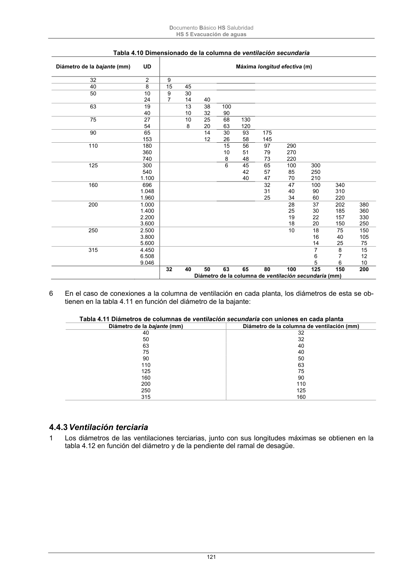

DB-HS · Página 121 · versión 2022-06-14
SHA256: 68df3caacc95f71aee2ec1ba7b2c65ae66155c21e3a8785521b8fdd4fd640d3b · página física 121 de 184 · métodos de encabezado
solo si están cotejados.
Documento · ← p. 120 · p. 122 →
Formatos: Markdown · JSON de bloques · PDF p. 121 · imagen PNG
Documento Básico HS Salubridad HS 5 Evacuación de aguas 121 Tabla 4.10 Dimensionado de la columna de ventilación secundaria Diámetro de la bajante (mm) UD Máxima longitud efectiva (m) 32 2 9 40 8 15 45 50 10 24 9 7 30 14 40 63 19 40 13 10 38 32 100 90 75 27 10 25 68 130 54 8 20 63 120 90 65 153 14 12 30 26 93 58 175 145 110 180 15 56 97 290 360 10 51 79 270 740 8 48 73 220 125 300 540 1.100 6 45 42 40 65 57 47 100 85 70 300 250 210 160 696 32 47 100 340 1.048 31 40 90 310 1.960 25 34 60 220 200 1.000 1.400 2.200 3.600 28 25 19 18 37 30 22 20 202 185 157 150 380 360 330 250 250 2.500 3.800 5.600 10 18 16 14 75 40 25 150 105 75 315 4.450 7 8 15 6.508 6 7 12 9.046 5 6 10 32 40 50 63 65 80 100 125 150 200 Diámetro de la columna de ventilación secundaria (mm) 6 En el caso de conexiones a la columna de ventilación en cada planta, los diámetros de esta se ob- tienen en la tabla 4.11 en función del diámetro de la bajante: Tabla 4.11 Diámetros de columnas de ventilación secundaria con uniones en cada planta Diámetro de la bajante (mm) Diámetro de la columna de ventilación (mm) 40 32 50 32 63 40 75 40 90 50 110 63 125 75 160 90 200 110 250 125 315 160 4.4.3 Ventilación terciaria 1 Los diámetros de las ventilaciones terciarias, junto con sus longitudes máximas se obtienen en la tabla 4.12 en función del diámetro y de la pendiente del ramal de desagüe.
